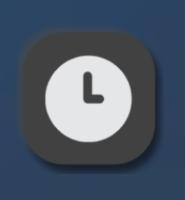
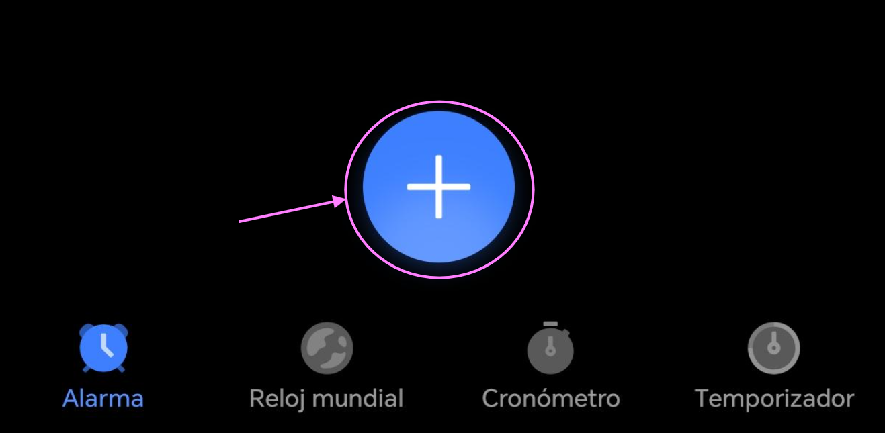
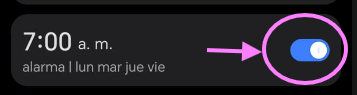

Alarmas en tu celular
Aprende a crear, activar y detener alarmas fácilmente.
Crear una alarma
1
Abra la aplicación Reloj

2
Toque la opción Alarma
3
Presione el botón +

4
Seleccione la hora y minutos
5
Presione Guardar o el siguiente icono: ✔
Activar o desactivar
1
Busque la alarma creada
2
Use el botón para encender o apagar

3
Si está encendida, sonará a la hora indicada
Detener la alarma
1
Cuando suene, aparecerá en pantalla
2
Toque Detener o deslice el dedo sobre la pantalla
3
También puede usar Posponer